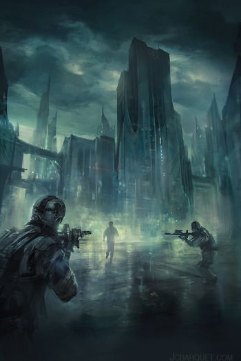
Антиутопия или дистопия (англ. dystopia, словослияние от dysfunction — «дисфункция», и utopia) — жанровая разновидность в художественной литературе, описывающая государство, в котором возобладали негативные тенденции развития (в некоторых случаях описывается не отдельное государство, а мир в целом). Антиутопия является полной противоположностью утопии.
Отличия антиутопии от утопии:
Антиутопия является логическим развитием утопии и формально также может быть отнесена к этому направлению. Однако, если классическая утопия концентрируется на демонстрации позитивных черт описанного в произведении общественного устройства, то антиутопия стремится выявить его негативные черты. Важной особенностью утопии является её статичность, в то время как для антиутопии характерны попытки рассмотреть возможности развития описанных социальных устройств (как правило — в сторону нарастания негативных тенденций, что нередко приводит к кризису и обвалу). Таким образом, антиутопия работает обычно с более сложными социальными моделями.
Советским литературоведением антиутопия воспринималась в целом отрицательно. Например, в «Философском словаре» (4-е изд., 1981) в статье «Утопия и антиутопия» было сказано: «В антиутопии, как правило, выражается кризис исторической надежды, объявляется бессмысленной революционная борьба, подчёркивается неустранимость социального зла; наука и техника рассматриваются не как сила, способствующая решению глобальных проблем, построению справедливого социального порядка, а как враждебное культуре средство порабощения человека». Такой подход был во многом продиктован тем, что советская философия воспринимала социальную реальность СССР если не как реализовавшуюся утопию, то как общество, владеющее теорией создания идеального строя (теория построения коммунизма). Поэтому любая антиутопия неизбежно воспринималась как сомнение в правильности этой теории, что в то время считалось неприемлемой точкой зрения. Антиутопии, которые исследовали негативные возможности развития капиталистического общества, напротив, всячески приветствовались, однако антиутопиями их называть избегали, взамен давая условное жанровое определение «роман-предупреждение» или «социальная фантастика». Именно на таком крайне идеологизированном мнении основано определение антиутопии, данное Константином Мзареуловым в его книге «Фантастика. Общий курс»: «…утопия и антиутопия: идеальный коммунизм и погибающий капитализм в первом случае сменяется на коммунистический ад и буржуазное процветание во втором».
Наиболее последовательно тезис о различии «реакционной» антиутопии и «прогрессивного» романа-предупреждения разработали Евгений Брандис и Владимир Дмитревский. Вслед за ними его приняли и многие другие критики. Впрочем, такой влиятельный историк фантастики, как Юлий Кагарлицкий, такого различия не принимает, и даже об Оруэлле, также как о Замятине и Хаксли, пишет вполне нейтрально и объективно. На 10 лет позже с ним согласился крупный социолог и партийный чиновник (в то время сотрудник аппарата ЦК КПСС, в перестройку помощник генсека) Георгий Шахназаров.
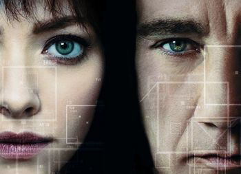
«Анон» (англ. Anon) — фантастический триллер Эндрю Никкола. В главных ролях: Клайв Оуэн и Аманда Сейфрид.
Выход в широкий прокат в России состоялся 10 мая 2018 года.
«Арка» (англ. ARQ) — американский фантастический фильм 2016 года. Премьера состоялась 9 сентября 2016 года на кинофестивале в Торонто. Согласно сюжету фильма, главные герои застревают во временной петле в запертой лаборатории. Они пытаются защититься от бандитов в масках, и сохранить разработанный новый источник энергии, который может спасти человечество.
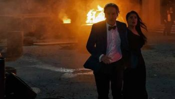
Bliss is a 2021 American science fiction drama film written and directed by Mike Cahill. It stars Owen Wilson and Salma Hayek. A man whose life is in disarray meets a beautiful woman who tries to convince him he is living in a simulation.
It was released on February 5, 2021, on Amazon Prime Video. The film received mostly unfavorable reviews from critics.
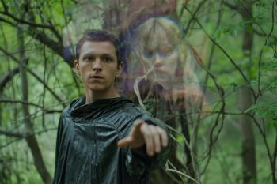
«Поступь хаоса» (англ. Chaos Walking) — американский фантастический приключенческий фильм режиссёра Дага Лаймана. Главные роли в нём исполнили Том Холланд и Дейзи Ридли. Фильм снят по мотивам первой книги Патрика Несса «Поступь хаоса». Премьера фильма состоялась 5 марта 2021 года.
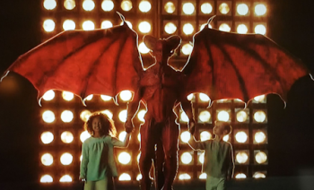
«Конец детства» (англ. Childhood’s End) — американский телевизионный сериал, созданный Мэтью Грэхэмом по мотивам научно-фантастического романа Артура Кларка. Премьера состоялась на канале Syfy 14 декабря 2015 года.
Code 8 is a 2019 Canadian science fiction action film written and directed by Jeff Chan, about a man with superpowers who works with a group of criminals to raise money to help his sick mother. The film is a feature-length version of the 2016 short film of the same name.
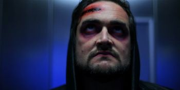
AKA:
Movie: Dark by Noon
Storyline: This time-travel thriller is set in an alternate time, a world where history has unfolded differently. Rez played by Patrick Buchanan (Belfast Story) lost his wife sometime in the past. Now heist a man abandoned by society, but he possesses a gift: the perfect photographic memory, but having perfect recall isn't all it's cracked up to be. A covert government agency headed by Rez's old mentor Haycock - played by Anthony Murphy (Charlie Casanova, Dawn of the Dragonslayer) has stolen a device called 'Titus'; a machine that has the ability to send a person eight hours into the future, but only for a short period. The organisation is making millions by recording advance knowledge of the stock market, heisting the future eight hours at a time. One day Rez leaps forward in time and witnesses a nuclear explosion. As he jumps back to his own time-line, events begin to spiral out of control as he only has eight hours to discover the cause, save his estranged daughter and a city, unaware it's about to be destroyed.
Genres: Drama, Sci-Fi, Thriller
Actor: Patrick Buchanan, Tim Dillard, Grace Fitzgerald
Director: Alan Leonard, Michael O'Flaherty
Country: Ireland
Production Co: Ikka Productions, Vico Films
Duration: 96 min
Release: 6 May 2013 (UK)
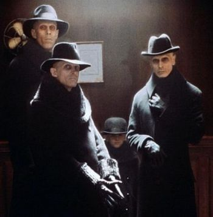
«Тёмный Город» (англ. Dark City) — фантастический фильм, снятый Алексом Пройасом в 1998 году по мотивам собственного рассказа семилетней давности. Режиссёрская версия фильма (Director’s Cut) появилась на DVD к десятилетию его премьеры — летом 2008 года.
Работа над фильмом:
Первоначальный сценарий «Тёмного города» имел пессимистический финал (фильм заканчивался триумфом инопланетян), но по ходу работы над лентой концовка несколько раз менялась. В своём окончательном варианте фильм заканчивается несколько натянутым хэппи-эндом, больше похожим на открытый финал.
Декорации фильма разрабатывались как дань уважения к «Бегущему по лезвию» и шедеврам немецкого экспрессионизма, особенно легендарному «Метрополису» (1927). До этого в Австралии, где велись съёмки, никогда не строились декорации подобного масштаба. Для более реалистичной передачи движения зданий были использованы новейшие компьютерные технологии.
Роджер Эберт отмечает, что уличные сцены в «Тёмном городе» созвучны городским пейзажам Эдварда Хоппера и Джека Веттриано. «Мир, созданный Странниками, кажется позаимствованным из нуаровых фильмов сороковых; перед нами мелькают фетровые шляпы, сигареты, неоновые вывески, торговые автоматы, старинные автомобили вперемешку с более новыми».
Облик инопланетян — вселившихся в человеческие трупы — был вдохновлён внешностью сыгравшего одного из них Ричарда О’Брайена. Отдельной проработки потребовал тот из них, который вселился в тело ребёнка. Их зловещие черты позволяют критикам говорить о «Тёмном городе» как о гибриде кинофантастики с фильмом ужасов.
Первые кадры фильма сопровождаются закадровым комментарием в исполнении Кифера Сазерленда. «New Line Cinema» заставила Алекса Пройяса добавить его, несмотря на то, что комментарий раскрывает некоторые детали сюжета. Режиссёрская версия фильма вышла уже без этого комментария.
Влияние:
Несмотря на весьма умеренные кассовые сборы, «Тёмный город» стал одним из культовых фильмов 1990-х. Вот что по этому поводу говорит онлайн-ресурс allmovie:
Кто любит сюжеты прямолинейные и укоренённые в действительности, должен избегать этого фильма, но для тех, кто не имеет ничего против смешения развлечения с метафизикой, «Тёмный город» — один из самых недооценённых фильмов 1990-х.
Влияние его художественного решения и философской проблематики ощутимо в «Матрице», которая снималась в тех же самых сиднейских декорациях через год после «Тёмного города». По оценке Эберта, «Тёмный город» воплотил те эффекты, к которым стремились создатели «Матрицы», только раньше, с большим чувством и воображением.
Награды и номинации:
Награды:
• 1999 — Премия «Сатурн» - Лучший научно-фантастический фильм
• 1999 — Премия Брэма Стокера - Лучший сценарий — Дэвид Гойер, Лем Доббс, Алекс Пройас
• 1999 — Брюссельский кинофестиваль - Приз зрителей «Пегас» — Алекс Пройас
• 1998 — Премия «National Board of Review» - Специальное упоминание за отличное качество
Номинации:
• 1999 — Премия «Сатурн»
• Лучшие костюмы
• Лучший режиссёр — Алекс Пройас
• Лучший грим
• Лучшие спецэффекты
• Лучший сценарий — Дэвид Гойер, Лем Доббс, Алекс Пройас
• 1999 — Премия «Хьюго»
• Лучшая постановка
«Тёмные отражения» — фантастический триллер режиссёра Дженнифер Ю. В главной роли: Амандла Стенберг. Премьера в мире 02.08.2018.
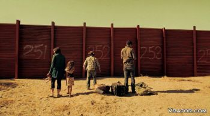
Movie: Dragon Day
Storyline: A family getaway to a mountain town turns deadly when China launches a massive cyberattack against the USA, forcing former NSA engineer Duke Evans to fight to save his wife and daughter in the New World Order.
Actor: Ethan Flower, Osa Wallander, Jenn Gotzon Chandler
Director: Jeffrey Travis
Country: USA
Production Co: Burning Myth Productions, Matter Media Studios
Duration: 95 min
Release: 28 October 2014 (USA)
«Равные» (англ. Equals) — американский научно-фантастический фильм-антиутопия 2015 года.
Критика:
Фильм получил в большей степени отрицательные отзывы кинокритиков. На сайте Rotten Tomatoes фильм имеет рейтинг 32 % на основе 66 рецензий со средним баллом 5 из 10. На сайте Metacritic фильм имеет оценку 43 из 100 на основе 27 рецензий критиков, что соответствует статусу «смешанные или средние отзывы».
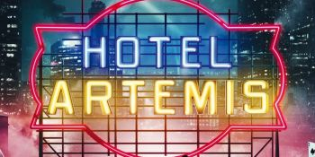
«Отель „Артемида“» (англ. Hotel Artemis) — американский приключенческий боевик режиссёра Дрю Пирса.
Мировая премьера фильма состоялась 7 июня 2018 года. В России премьера фильма прошла 23 августа.
«Время» (англ. In Time) — американский фантастический триллер Эндрю Никкола, выступившего продюсером, сценаристом и режиссёром фильма. Премьера в США состоялась 28 октября 2011 года, в России — 27 октября.
Фильм получил в большей степени отрицательные отзывы кинокритиков. На сайте Rotten Tomatoes из 157 рецензий положительными оказались 36 % рецензий со средней оценкой 5,2 из 10. На Metacritic средний рейтинг фильма составляет 54 балла из 100 на основе 33 обзоров.
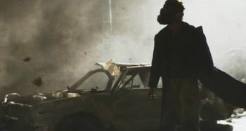
Movie: The Last Man
Storyline: Tov Matheson is a war veteran with post traumatic stress disorder who perceives that the end of the world is coming. After establishing a relationship with a dubious Messiah, he leaves his normal life to begin the construction of a shelter underground and trains himself, in an extreme way, at the cost of everything in his life. When he also believes the Messiah, something extraordinary happens.
Genres: Action, Drama, Sci-Fi
Actor: Hayden Christensen, Harvey Keitel, Marco Leonardi
Director: Rodrigo H. Vila
Country: Argentina, Canada
Production Co: Cinema 7 Films, Aicon Music Pictures, Quintessential Film
Duration: 100 min
Release: 6 September 2018 (Argentina)
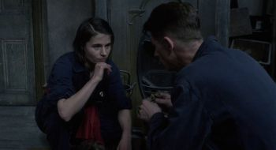
«1984» (англ. Nineteen Eighty-Four) — британский фильм-антиутопия, снятый по роману Джорджа Оруэлла «1984» в год, к которому приурочены происходящие в нём события.
Это вторая экранизация романа. Первая, «1984», снята режиссёром Майклом Андерсоном в 1956 году.
Номинация на премию BAFTA. Последняя роль в карьере именитого актёра Ричарда Бёртона (партийный функционер О’Брайен), скоропостижно скончавшегося за два месяца до выхода фильма в прокат.
«Идеальное создание» (англ. Perfect Creature) — вампирский фильм режиссёра Гленна Стэндринга, снятый в 2006 году. Стиль картины близок к стимпанку.
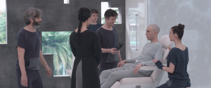
Realive (Spanish: Proyecto Lázaro) is a 2016 Belgian-Spanish-French science fiction film written and directed by Mateo Gil.
Reception:
Film critic Dennis Harvey of Variety.com wrote that "Gil demonstrates a graceful assurance orchestrating Realive's design and technical elements" but felt that the film was ultimately "emotionally antiseptic".
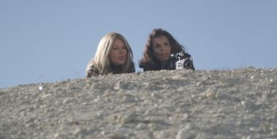
Movie: Rogue Warrior: Robot Fighter
Storyline: A few decades from now - Sienna, a rebellious robot-fighting arms dealer, lives on a post-apocalyptic Earth. When the cities start to fall under the control of the A.I. Scourge, a hyper-weaponized robot army, Sienna decides to leave the Earth and journey to the centre of the galaxy, seeking a mythical weapon that can neutralize any form of A.I.Pursued by giant machines, Sienna loses everything she cares about in an effort to save the last vestiges of humanity in an A.I. controlled galaxy.
Genres: Action, Sci-Fi
Actor: Tracey Birdsall, William Kircher, Daz Crawford
Director: Neil Johnson
Production Co: Empire Motion pictures, Pacific Coast Entertainment
Duration: 101 min
Release: 6 June 2017 (USA)
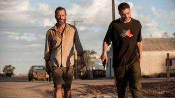
«Ровер» (англ. The Rover) — остросюжетный фильм режиссёра Дэвида Мишо, снятый им по собственному сценарию в 2014 году. Действие фильма разворачивается в австралийской пустыне через десять лет после глобального экономического коллапса. Главные роли исполнили Гай Пирс и Роберт Паттинсон. Премьерный показ фильма состоялся на кинофестивале в Каннах 18 мая 2014 года, где он демонстрировался вне конкурса в рамках программы «Полуночные показы».
«Ровер» демонстрировался на кинофестивале в Сиднее 7 июня 2014 года, премьера в австралийском прокате состоялась 12 июня 2014 года. В России фильм вышел 11 сентября 2014 года.
Фильм номинировался в пяти категориях премии Австралийской академии кинематографа и телевидения (AACTA Awards): за лучшую режиссуру, лучшую мужскую роль (Гай Пирс), лучшую мужскую роль второго плана (Роберт Паттинсон), лучшую художественную постановку и лучшую музыку. «Ровер» получил две награды: за лучшую женскую роль второго плана (Сьюзэн Прайор) и лучший звук.
Sleep Dealer is a 2008 futuristic science fiction film directed by Alex Rivera.
Sleep Dealer depicts a dystopian future to explore ways in which technology both oppresses and connects migrants. A fortified wall has ended unauthorized Mexico-US immigration, but migrant workers are replaced by robots, remotely controlled by the same class of would-be emigrants. Their life force is inevitably used up, and they are discarded without medical compensation.
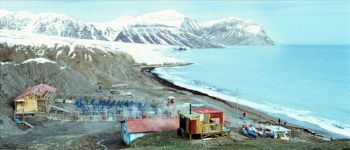
«Новая Земля» - фильм-притча производства кинокомпании «Андреевский флаг» (Россия, 2008).
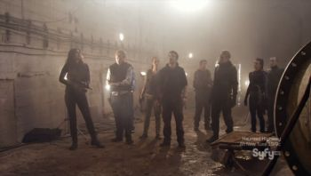
Movie: True Bloodthirst
Storyline: Bucharest, Romania. The not-too-distant future, but an entirely different city. The human population is dwindling. The vampire population, meanwhile, is exploding. Having emerged from the shadows a decade earlier, vampires now walk openly amongst the human population, as a precarious peace exists between the two. A peace made possible by the introduction of a synthetic blood substitute, dispensed by the Romanian government, making traditional vampire feeding, and preying on humans, no longer necessary. But even so, it's not a peace that everyone is entirely comfortable with...
Genres: Sci-Fi, Horror, Action
Actor: Ben Lambert, Ewan Bailey, Claudia Bassols, Roark Critchlow, Neil Jackson, Iliana Lazarova, Dimitar Ougrinov, Andrew Lee Potts, Heida Reed, George Zlatarev
Director: Todor Chapkanov
Production Co: UFO Films, UFO International Productions
Duration: 90 min
Release: 2012
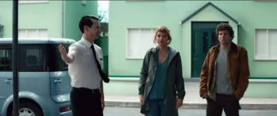
Вивариум (англ. Vivarium) — научно-фантастический фильм 2019 года, снятый режиссёром Лорканом Финнеганом по рассказу Финнегана и Гаррета Шенли.
Мировая премьера состоялась 18 мая 2019 года на Каннском кинофестивале.
The White King is a 2016 British science fiction-drama film written and directed by Alex Helfrecht and Jörg Tittel. It is an adaptation of the novel of the same name written by György Dragomán and follows Djata (Lorenzo Allchurch) growing up in a dictatorship, without access to the rest of the world, while dealing with persecution against him and his parents by the government. It had its world premiere at the Edinburgh International Film Festival and its international premiere at the Tallinn Black Nights Film Festival.
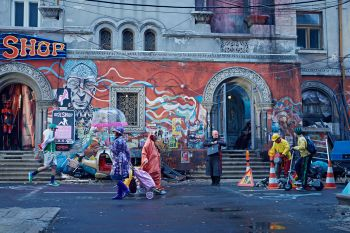
«Теорема Зеро» (англ. The Zero Theorem) — фантастический фильм Терри Гиллиама по сценарию Пэта Рашина. Включён в основной конкурс 70-го Венецианского кинофестиваля, где был показан 2 сентября 2013 года. Российская премьера состоялась 2 января 2014 года. 14 июня 2014 года Терри лично приехал в Москву, чтобы в Барвиха Luxury Village представить фильм зрителям.
Другие факты:
• До выхода фильм сравнивали с «Бразилией».
• Имя главного героя — Qohen Leth — это игра слов от Qoheleth (название Экклезиаста на иврите) и коэн (иудейский священник).
• В фильме представлены несколько пародийных культов, созданных обществом потребления в поисках смысла жизни, такие как «Церковь Бэтмена-искупителя» и «Церковь умного дизайна».
Критика: А. Гагинский, проводя сюжетные параллели, писал, что вместо второй «Бразилии» получился «Воображариум доктора Парнаса» в киберпанковских декорациях.